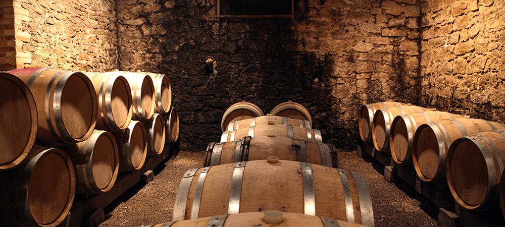

História do Vinho
A história do vinho remonta a milhares de anos, com as primeiras evidências de produção de vinho aparecendo em torno de 6000 a.C. no atual Irã. O vinho desempenhou um papel importante em muitas culturas, desde rituais religiosos até celebrações sociais.
Produção do Vinho

A produção de vinho começa com a colheita das uvas. Após a colheita, as uvas são esmagadas para liberar o suco, que é então fermentado. O processo de fermentação pode variar dependendo do tipo de vinho que está sendo produzido. Após a fermentação, o vinho é envelhecido, filtrado e engarrafado.